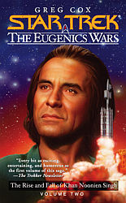
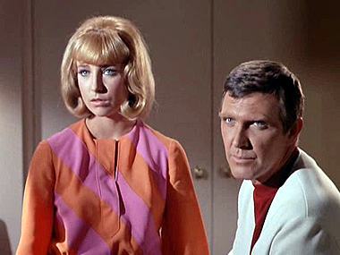
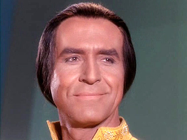
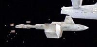
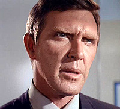
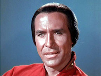
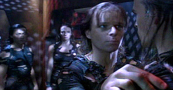
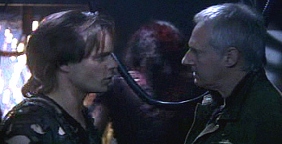
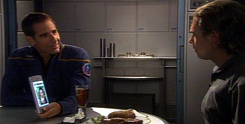
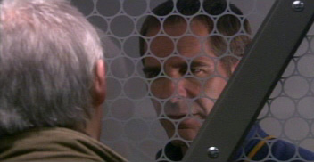

|


Literatura

| ''STAR
TREK: EUGENICS WARS" |  |
|
Escrito por: Greg Cox |
| Review
por Leandro M. Pinto |
| Introduo Com este segundo artigo, damos agora continuidade para uma anlise do segundo volume de Star Trek: The Eugenics Wars, do qual o Trek Brasilis j fez anteriormente a sinopse e reviso do primeiro volume. Neste artigo, alm da sinopse comentada e da avaliao, tambm iremos fazer uma avaliao dos eventos ocorridos nos livros com os eventos vistos no episdio original, e tambm nos mais recentes episdios de Enterprise que fazem bastante meno das Guerras Eugnicas. Sinopse da Trama Junho de 1992 a Maro de 1993 Encontramos
novamente Roberta Lincon no Atoll de Mururoa, no Pacfico, no momento levando
a cabo mais uma das misses que Gary Seven e ela fazem para procurar manterem
uma estabilidade na sociedade humana do final do sculo 20; esta em particular
para sabotar o lanamento de um foguete Ariane IV, o qual foi adquirido por
ningum menos do que Khan. A razo oficial seria a de lanar um mero satlite
de comunicaes, mas ela sabe que o foguete leva na verdade um dispositivo de
manipulao da camada de oznio do planeta, desenvolvido com tecnologia que Khan
roubou de Gary Seven alguns anos antes, como visto nos eventos do volume um da
trama.  Enquanto
se esquiva pela plataforma de lanamento desta abandonada base francesa que Khan
secretamente arrendou, Roberta pensa nos eventos dos ltimos trs anos, durante
os quais Khan conseguiu tomar o poder e passar a controlar uma regio do norte
da ndia, Punjab, situada entre a China e o Paquisto, com Khan tendo feito em
Chandigarh, uma das principais cidades da regio, o seu palcio e quartel-general
principal. Atravs de diversas tramas polticas e lutas pelo poder na ndia, Khan
obteve sucesso em at mesmo o governo indiano no conseguir questionar o poder
dele na regio, o que essencialmente deu a Khan o seu prprio estado-nao. Contudo,
Roberta esbarra com alguns dispositivos de segurana que Khan colocou, e ela acaba
prisioneira deles, e tem que assistir impassvel ao lanamento com sucesso da
Estrela da Manh, o nome desta arma de destruio em massa de Khan. Aps algum
tempo captiva, Roberta consegue escapar depois de usar um "plano B"
que Gary Seven providenciou para emergncias como esta.  Algum tempo depois, Khan patrocina uma conferncia de diplomatas em seu palcio Chandigarh, Punjab, na ndia, regio na qual ele detm um controle o qual nem mesmo o governo indiano consegue questionar; Ament, sua lugar-tenente, o avisa que est tudo pronto, e que Seven e Lincon esto ocupados com desenvolvimentos na crise srvia no momento. O propsito da reunio o de Khan anunciar que detm controle e influncia sobre pessoas em postos-chaves em mais de quarenta naes, especialmente atravs da sia e do Oriente-Mdio, o que o garante controle sobre praticamente um quarto da Terra. Assim, ele agora quer ser visto como um importante jogador no cenrio internacional, ao invs apenas de lder de um pas pequeno. Para sublinhar suas afirmaes e garantir a todos que est falando srio, declara tambm possuir a Estrela da Manh, depois de uma descrio de suas capacidades, faz uma demonstrao sobre a Antrtida, o que serve para impressionar todos. Roberta est na "livraria" que serve de fachada ao novo HQ de Seven em Londres, quando dois folies que esto participando das festividades do Dia de Guy Fawkes entram na loja. Enquanto eles perguntavam para ela se eles tinham alguma cpia de Far Beyond the Stars, Roberta percebe algo errado sobre ambos -- e logo em seguida, uma luta se inicia, com eles se revelando serem agentes de Khan, na qual Roberta chega a usar uma cpia de Chicago Mobs of the Twenties como arma para desacordar um deles. Roberta consegue avisar Seven no andar acima, e ambos fazem procedimentos de evacuao de emergncia, acostumados que ficaram com eventuais ataques de Khan a suas operaes. Aps alguma perseguio pelas ruas londrinas, Roberta consegue despistar os agentes de Khan aps Seven se teleportar em segurana. Khan informado sobre o desenrolar da misso em Londres enquanto estava tendo uma reunio governamental com Ament, que descreve para Khan como estava prosseguindo reformas econmicas no seu recentemente dominado pas ao norte da ndia. Os relatrios so inconclusivos sobre o paradeiro de Seven e Roberta, o que deixa Khan descontente, e Ament expe seu desapreo pelas operaes paramilitares que seu chefe parece fazer, o que tende a pintar Chandigarh como um dos chamados "rogue-states", o que dificulta financiamento pelo Banco Mundial para as reformas que Khan promove. Entrementes, de So Francisco, Dr. Nicholas, o "inventor" do alumnio transparente levado por um grupo de oficiais da Fora Area dos EUA para uma instalao secreta no Arizona, onde j se encontram Jeffrey Carlson, Jackson Roykirk e Shannon O'Donnel, que esto a trabalhar em um projeto secreto para uma nova classe de nave interestelar baseado em pesquisas secretas resultantes de artefatos de origem aliengena. Meados de 1993 at o incio de 1994 Contando com o banco de dados que roubou de Gary Seven alguns anos antes, Khan conseguiu rastrear a localizao de todas as crianas que Seven e Roberta removeram do Projeto Chrysalis em 1974. Assim sendo, Khan convocou uma reunio em seu palcio para conhecer aqueles os quais se tornaram lderes em suas prprias naes, para assim os oferecer para se tornarem aliados de Khan em seu esforo de trazer ordem humanidade. O grupo que Khan tem ali em sua presena de fato era bem diverso. Entre outros, ali esto Vasily Hunyadi, um ditador dos balcs que surgiu na regio aps o fim da Iugoslvia; Elijah Amin, um warlord da Somlia; Alberto Gomez, um revolucionrio peruano lder de um grupo de esquerda; Chen Tiejun, uma chinesa metida a profeta, lder de uma seita de amazonas; e Randall Morrison, um comandante de uma milcia americana de cunho nacionalista e anti-governo federal. Todos haviam sido previamente brifados sobre suas origens, de como foram criados no Projeto Chrysalis, e Khan agora propunha que todos se unissem em torno de um objetivo comum. Contudo, a reunio acaba tendo um desenrolar bem diferente daquele que Khan desejava. Embora compartilhando uma origem comum, aquele grupo todo simplesmente tinha agendas de intenes completamente diferentes uns dos outros. Khan acreditava que poderia conseguir negociar e sobrepujar qualquer diferena que eventualmente separasse os seus irmos de origem, mas isto se mostrou impossvel. A reunio rapidamente desandou em um caos, com ideologias e vises diferentes colidindo, com cada um daqueles lderes discordando em praticamente tudo, e pareciam estar de acordo apenas sobre o fato de que no iriam se submeter automaticamente a Khan apenas por ele ser quem , e ter sido aquele que revelou suas origens. Extremamente insatisfeito, Khan d por encerrada a reunio, assegurando para si mesmo que de uma forma ou de outra, sua viso de uma utopia global iria se realizar, nem que para isto tivesse que combater aqueles seus antigos irmos do Projeto Chrysalis. Uma
das primeiras providncias de Khan pensar em qual destes super-humanos desafiantes
a sua liderana ele deveria atingir primeiro com um ataque atravs da Estrela
da Manh -- ele chega at mesmo a iniciar procedimentos de aquisio de alvo para
uma regio. Contudo, Ament argumenta a favor de usar de mtodo mais sutil de providenciar
resposta as insolncias dos que o desafiam. Khan tem que admitir para si mesmo
que esta que escolheu para ser a sua espcie de Primeira-Ministra uma formidvel
mulher, muito boa conselheira e que demonstra ter uma personalidade admirvel,
tendo sido uma das poucas que j conseguiu resistir ao charme de seu lder. Entrementes,
Seven e Roberta arrumam um novo local para o seu quartel-general, em Arran, uma
ilha ao largo da Esccia; Seven decidiu ficar longe de grandes centros urbanos
para seguir algo mais low-profile e que possa evitar acabar criando danos colaterais
na populao no caso de um novo ataque por Khan. Desta nova sede, eles continuam
a monitorar as atividades de Khan bem como as dos demais lderes geneticamente
modificados, e tambm acompanharem o progresso daquilo que Gary Seven considera
como seu Plano B.  Meses depois, Khan se encontra a bordo do Kaur, o primeiro de uma classe de submarinos de propulso nuclear de sua marinha. No momento, o Kaur navega no Mediterrneo em direo do mar Adritico, com o troco que Khan planeja retribuir a Hunyadi -- ele pretende lanar contra a base do lder dos balcs um ataque com um mssil cruise UGM-109 Tomahawk, que os agentes de Khan conseguiram comprar no mercado negro a um alto preo. Aps passar facilmente por algumas regies com minas martimas, o Kaur se depara com maiores dificuldades; no caso, um submarino da classe Akula, que o governo de Hunyadi comprou da Rssia. Uma feroz batalha submarina segue-se, e Khan no comando do avariado Kaur, aps o seu Capito acabar gravemente ferido, consegue destruir o Akula de Hunyadi, mas no antes que tivesse que abandonar a misso devido ao Kaur acabar ficando danificado demais para prosseguir. Fevereiro at o final do ano de 1994 Tendo que enfrentar uma crescente oposio interna em seu pas, Khan aconselhado por Ament para diminuir os crescentes gastos militares e nas pesquisas de engenharia gentica no atoll de Mururoa para se concentrar mais nos problemas domsticos. Contudo, no isto que ele tem em mente, e Khan quer continuar a sua campanha para conseguir derrotar seus rivais geneticamente modificados e o grupo de Gary Seven. Aps a reunio com Ament, Khan avisado que h um sujeito pedindo uma audincia com ele, afirmando ter conhecido sua me muitos anos antes. Khan relutantemente recebe um idoso e muito mal de sade Dr. Willians, e constata de fato que ele quem afirma ser, um dos antigos braos-direitos de sua me no Projeto Chrysalis. Khan no se impressiona realmente com o sujeito e no sente nada por ele alm de desprezo, mas fica particularmente interessado por duas informaes que ele trouxe: primeiro, Willians oferece para Khan informaes sobre uma bactria que pode ser usada em guerra biolgica, e alm disto, Willians tambm confidencia para Khan que os responsveis diretos pela destruio do Projeto Chrysalis, e por tabela, da morte de sua me, foram Gary Seven e Roberta Lincon. Tempos depois, Gary Seven e Roberta esto providenciando uma operao para vigiarem com mais ateno um dos rivais de Khan, o Comandante Morrison, lder de uma milcia no Arizona. Fingindo ser uma nacionalista de extrema direita, Roberta consegue se infiltrar no grupo de Morrison, e passa a acompanhar os planos dele. Enquanto isto, Khan no est parado. Durante uma reunio da ONU em Genebra, na qual Vasily Hunyadi participa, fazendo exigncias para o seu enclave nos balcs, h um atentado contra a conferncia atravs do uso de gs sarin, o que efetivamente extermina todos os participantes, o lder srvio incluso. Roberta descobre que Khan contou com algum apoio logstico do grupo de Morrison, tendo inclusive compartilhado com ele a tecnologia de "impedir teleportagem de Gary Seven" que conseguiu desenvolver, e que Morrison tem mais planos para ataques biolgicos em outros alvos na Europa. Enquanto Khan continua as pesquisas no atoll de Mururoa com a bactria que Willians ofereceu para ele, Seven coloca em bom uso as informaes que Roberta est conseguindo por estar infiltrada no grupo de Morrison. No momento, Seven est no Terminal Waterloo, em Londres, no primeiro dia de operaes regulares dos trens pelo recm-inaugurado Eurotnel. Seven tem alguma dificuldade para conseguir encontrar o agente de Morrison na multido lotada do terminal, mas finalmente consegue encontrar o sujeito quando ele estava prestes a abrir no meio do saguo principal uma pequena caixa tetra-pack contendo gs sarin. Seven consegue destruir a caixa com um tiro de seu servo, mas o agente de Morrison escapa para dentro do trem, e aps alguma caa por ele pela composio j viajando em direo a Paris, Seven o captura. Aps contatar Guinian, que eventualmente ajuda Seven em algumas misses, ela o informa que tambm conseguiu neutralizar um agente de Morrison na estao parisiense. Com isto, Seven se teleporta do trem. Aps descobrir que seus planos foram neutralizados, Morrison entra em um modo "tudo-ou-nada", e acreditando que tropas federais do Exrcito dos EUA esto prestes a atacar seu complexo, Morrison ordena a seus lugares-tenente que tranquem seus seguidores em bunkers, para uma espcie de suicdio-coletivo. Como era de se esperar, nem todos os rednecks ali concordam com esta sada drstica de Morrison, e Roberta, no meio deles, v que a situao est ficando tensa, com muitos malucos armados trancados dentro de um bunker. Tendo conseguido neutralizar a contramedida eletrnica de Morrison que impedia os teleportes pelos servos, ela e Seven providenciam duas teleportagens; primeiro, uma para estrategicamente retirar de dentro de todas as armas a plvora das munies, para evitar um tiroteio, e segundo, Roberta se teleporta para fora do bunker de modo a abrir o local e salvar aquelas pessoas. Aps uma debandada em massa comear no complexo de Morrison, ela consegue o encurralar em seu escritrio, mas no antes de conseguir impedir ele de cometer suicdio. Incio de 1995 at janeiro de 1996 Ament consegue descobrir que Khan est secretamente preparando uma espcie de soluo-final, tendo a arma biolgica que conseguiu de Willians como vetor principal. Ele decidiu que tentar unificar e pacificar a humanidade simplesmente no seria tarefa possvel, ento decide que o extermnio dos humanos normais, com ataques de ICBMs levando o agente biolgico, a sada possvel para assegurar aos iguais a ele, geneticamente imunes aquela bactria, o domnio sobre a Terra. Alguns meses depois, Gary Seven prepara um plano para atacar esta nova ameaa de Khan, e contando com o apoio do grupo de super-humanas liderados por Chen Tiejun, um ataque preventivo executado contra a base de Khan no atoll de Mururoa. Commandos liderados por Tiejun invadem a ilha, e uma batalha campal tem incio pelo controle das instalaes. Khan informado sobre o ataque, e ordena seu pessoal em Mururoa que coloque o plano de lanamento dos ICBM biolgicos em prtica, mesmo eles ainda no estando com um preparo ideal para lanamento. Tiejun e suas foras conseguem ter algum domnio da ilha, mas no antes que os homens de Khan conseguissem iniciar procedimentos de lanamento. Sem outra opo, Tiejun tem que apelar para o seu plano B, e efetivamente consegue destruir a si mesma e toda a ilha aps ativar um dispositivo nuclear que destri toda a base de Khan em Mururoa. As mais recentes escaramuas entre os diversos grupos liderados por humanos geneticamente modificados comeam a criar uma situao instvel no cenrio internacional. Alm dos grupos de Morrison e de Hunyadi, diversos outros como os de Gomez, no Peru, e Amin, na Somlia, vo sendo neutralizados, e apenas uma questo de tempo at as potncias ocidentais e a Rssia voltarem sua ateno a Khan. Sentido que est ficando sem opes, e aps o incio de uma ofensiva de foras ocidentais e russas contra Chandigarh, Khan decide utilizar a Estrela da Manh para por um fim a tudo. Contudo, no que Khan estava prestes a iniciar os procedimentos, Gary Seven consegue se teleportar para a presena do lder eugnico para lhe propor um comprometimento. Durante a conversao, Khan questiona como que Gary Seven pode ter passado todos estes anos estando to perto dos calcanhares dele assim, e Seven pede para ningum menos do que Ament explicar para ele. A explicao vem na forma de Ament se transformar em uma gata preta bem na frente dele, relevando que todo este tempo, a mulher que Khan pensava ser mais uma super-humana originria do Projeto Chrysalis, era na verdade sis. Gary Seven havia plantado a informao falsa nos dados que Khan roubara anos antes, o que efetivamente garantiu que Khan acabasse colocando como sua lugar-tenente a agente de Gary Seven. Ele no deixa de admirar Seven por sua engenhosidade, e o congratula por ter sido um adversrio de valor. Embora
Khan tivesse ficado relutante a princpio, em ter que negociar com este seu antigo
inimigo, mas sua ateno conquistada por Seven quando este expe os detalhes
de sua proposta. Seven explica que em troca de Khan destruir a Estrela da Manh
e desistir de seu ataque a camada de oznio do planeta, ele est disposto a oferecer
para Khan e cerca de 80 de seus seguidores uma nave de hibernao, a DY-100, que
horas antes, Roberta conseguiu roubar das instalaes americanas na rea 51, com
a ajuda de uma muito relutante Sharonn O'Donnel. Aps alguns procedimentos, Gary
Seven teleporta Khan e alguns de seus seguidores que sobreviveram ao ataque a
Chandigarh, para a DY-100 em rbita da Terra, e Khan a batiza de SS Botany
Bay. A bordo, Roberta j trabalhava para os preparativos da nave deixar rbita,
e ir automaticamente para um sistema estelar inabitado a cerca de 100 anos-luz
da Terra, onde Khan pode recomear a vida e construir uma nao para si e seus
seguidores, e depois de algum tempo, a nave parte. Algumas semanas mais tarde,
Gary Seven anuncia que est se aposentando da funo de Supervisor, e passa o
cargo para Roberta, que inclusive ganha a sua prpria companhia felina transmorfa,
na forma de um novo agente que Seven providenciou para vir ajudar sua antiga assistente.  Anlise e Avaliao E com este volume dois de Star Trek: The Eugenics Wars, conclumos a trama criada por Greg Cox para retratar os eventos relacionados a esta notria passagem no cnone e cronologia de Jornada nas Estrelas. Ainda que ntido que este volume dois trata-se de uma trama no geral bem mais redonda e resolvida do que o volume um, tambm de se considerar que ela dificilmente pode ser lida isoladamente, por estar extremamente amarrada ao volume anterior, claro. O volume um agiu muito mais como setup para as aes no volume dois do que como uma histria per se, e em contraste com o volume dois, as aes do volume anterior ficam at mesmo bem melhor contextualizadas. De fato, a histria mesmo apenas um nico livro dividido em duas partes, essenciais uma para a outra.  No que diz respeito a trama geral, eu tenho a impresso de que os livros de Greg Cox podem decepcionar aqueles que estariam esperando por uma guerra mais "tradicional" no sentido de ser amplo conflito militar aberto -- isto, estes livros no tem. Na trama que Greg Cox nos proporciona, aprendemos que as Guerras Eugnicas foram mais operaes de inteligncia, aes de sabotagem, escaramuas eventuais, joguetes polticos do que batalhas em campo aberto, embora em dadas ocasies tambm houve destas. Este estilo no me desagradou, realmente, pois sem dvida combinou com a opo de Cox de tentar contextualizar as Guerras Eugnicas com os eventos histricos reais de nosso prprio universo. E isto, claro, para no falarmos no uso por parte de Cox de praticamente cada evento cnone do universo estabelecido de Jornada que tivesse a ver com o final do sculo 20, indo desde os episdios originais da Srie Original at acontecimentos vistos em episdios de Deep Space Nine e Voyager. Isto um ponto importante de uma trama deste tipo, eu penso. Afinal de contas, estamos com uma histria da qual ns evidentemente j sabemos o que basicamente acontece no final: de uma maneira ou de outra, Khan ser derrotado e ir partir em exlio na DY-100. Assim, aquilo que buscamos aqui sabermos como isto ocorreu, e poder acompanhar tais eventos em conjunto com eventos reais os quais realmente vivenciamos e testemunhamos garantiu a The Eugenics Wars um "look-and-feel" consideravelmente prximo, realista, como se tivssemos uma parcela do universo de Jornada nas Estrelas na qual ns realmente faramos parte. Greg Cox no fez economia em utilizar eventos histricos recentes como pano-de-fundo para a sua trama, bem como at mesmo pequenos detalhes corriqueiros de nosso dia-a-dia de final do sculo 20 e incio do 21. A trama B a respeito da construo da nave DY-100 tambm foi claramente pensada de modo a justificar de alguma maneira a construo de to avanada nave em nossos dias, o que ficou de maneira geral satisfatria, ainda que aqui e ali tenha meio que "puxado o envelope" do plausvel para a tecnologia dos dias de hoje. J em relao as partes do livro que se passam no sculo 23, at que ponto foi necessrio esta trama se desenrolando na Enterprise e sua misso em Sycorax? Pouco, no meu ver. Tanto que Greg Cox parece colocar tal trama B bem mais de lado neste volume dois, pois temos bem menos cenas na Enterprise neste volume: apenas o prlogo, uma seqncia de batalha entre a Enterprise e os Klingons no meio do livro, e o eplogo. Entendo que Cox desejava ter com esta trama B uma situao de conexo com eventos no "presente" do universo de Jornada, mas seja como for, isto no foi o bastante para afastar a impresso "utilitria" de apenas servir de moldura para a trama principal, sem ser extremamente interessante per se -- apenas a interao entre os tradicional trio acho que se destaca nela. Enfim, esta segunda parte de Star Trek: The Eugenics Wars - The Rise and Fall of Khan Noonien Singh foi bastante satisfatria, e por si mesma, fica com uma avaliao de 3 em 4, bem colocado. O contexto de Eugenics Wars em relao ao cnone e cronologia de Jornada nas Estrelas Depois de dois primeiros anos no mximo mornos, e de um muito fraco terceiro ano, agora no seu quarto ano Jornada nas Estrelas: Enteprise parece que est finalmente aflorando como uma boa srie e a qual demonstra o real potencial de ser uma prequel desta importante franquia de fico-cientfica, e este bom resultado sem dvida conseqncia do trabalho de seu novo produtor, Manny Coto, responsvel por bem vindas mudanas nos valores de produo da srie. Um dos arcos de histria mais recentes resultantes da nova proposta de Coto para a srie tratou justamente de eventos relacionados com as Guerras Eugnicas. Desde Space Seed, o episdio da Srie Original que primeiro citou o tema, e mais tarde o segundo filme para cinema, Jornada nas Estrelas II: A Ira de Khan, no havia uma trama em episdios de Jornada nas Estrelas que lidasse tanto com o tema ou suas conseqncias, e de maneira to direta, coisa que sempre ficou mais relegada ao universo expandido da franquia, atravs de obras como os dois volumes de Star Trek: The Eugenics Wars. Assim, como os trs episdios do arco eugnico de Enterprise fazem meno direta questo, de se imaginar que inconsistncias com os livros devem surgir devido a pontos especficos de suas tramas no combinarem com eventos previamente estabelecidos nos livros. A idia agora fazermos uma avaliao de trechos dos episdios para vermos at que ponto estas inconsistncias ocorrem. Inicialmente,
aps se assistir todos os episdios relevantes, um ponto em geral j fica claro.
Aquilo que fica implcito pela descrio vista em Space Seed do futuro
referente a dcada de 1990 no combina em praticamente nada com o que de fato
ocorreu, o que obviamente compreensvel. Contudo, Greg Cox optou por
racionalizar da melhor maneira possvel tais eventos reais com os eventos descritos
em Space Seed. J o novo arco de Enterprise parece seguir uma linha
que combina mais com o que o episdio original deixa implcito, mas isto algo
que falaremos com mais detalhes a seguir nos comentrios dos dilogos.  Algo que tambm podemos notar ao vermos estes episdios que o arco de Enterprise cita muito mais as Guerras Eugnicas como um evento distinto do que Space Seed o faz -- o episdio da Srie Original se concentra mais sobre a figura de Khan, e as evidncias sobre o que ocorreu na dcada de 1990 no vo alm do necessrio para ajudar a caracterizar o personagem. Desta forma, e considerando que Manny Coto iria certamente balizar seu argumento para sua trama com os eventos de Space Seed, os fatos vistos no arco eugnico de Enterprise certamente entraro em conflito muito mais com os livros do que com o episdio original. Embora Greg Cox em momento algum de ambos os livros utilizou o termo "augment", eu vou o fazer para designar de maneira uniforme tanto os humanos geneticamente modificados dos livros quanto os dos episdios originais. The mid 1990's was the era of your last so-called world war. The Eugenics Wars. Of course. Your attempt to improve the race thought select breeing. Oh, wait a minute, not "our" attempt, Mr. Spock... a group of ambitious scientists; I'm sure you know the type: devoted to logic, completely unemotional... All right, gentlmen, as you were...! Spock, McCoy, e Kirk, Space Seed Isto, por si s, j entra em conflito com muita coisa no cnone e cronologia das sries, o qual indica claramente que a III Guerra Mundial que ocorreu na Terra se deu em algum momento entre cerca das dcadas de 2020 e 2040, como Jornada nas Estrelas: Primeiro Contato demonstra, por exemplo, e diversos outros episdios da franquia que mencionam assuntos que ocorreram entre o final do sculo 20 at por volta da dcada de 2030. Talvez a nica maneira de racionalizar este ponto seria considerar que McCoy afirmara "Eugenics Wars" logo aps a fala de Spock para o corrigir, ou seja, esclarecer que aquele conflito foi uma guerra distinta da "ltima guerra mundial", que viria a ocorrer anos depois, segundo outros pontos do cnone da franquia. It appears that they were in suspend animation when the ship took off. Scotty para Kirk, Space Seed Isto algo que aparentemente Greg Cox teve que abrir mo, pois como vimos, Roberta foi quem fez com que a Botany Bay decolasse para atingir rbita, para a ento Khan e demais augments irem a bordo. Como Scotty no pareceu estar completamente certo da informao, isto foi impreciso o bastante para servir aos propsitos do autor. I find no record whatsoever of a SS Botany Bay. Spock
para Kirk, Space Seed  Greg Cox cobriu bem este ponto ao fazer com que a construo do prottipo da classe tenha se dado atravs do programa secreto governamental que ele descreve nas passagens de seu livro. Isto combina tambm com o fato destacado em The Augments, onde Soong afirma que a Botany Bay seria apenas um mito, o que corrobora a informao de que Spock teria tido dificuldades para encontrar qualquer referncia que fosse a respeito da nave. Your Earth was on the verge of a dark ages. Whole populatins were being bombarded out of existence. A group of criminals could have being deal with far more efficience than wasting one of their most advanced spaceships. Spock para Kirk, Space Seed Dois pontos a avaliarmos aqui. Primeiro, Spock descreve como seria a dcada de 1990; uma racionalizao cnica de modo a carregar um certo exagero pode ser feita para explicar a sua descrio de "a beira de uma idade das trevas" e "populaes inteiras sendo exterminadas", especialmente se considerarmos todo o sculo 20 na equao. E em segundo lugar, a questo levantada por Spock diz respeito a deciso de Gary Seven de ter literalmente roubado a DY-100 para a oferecer para Khan, dando assim a ele uma sada no mnimo inusitada. In 1993 a group of these young supermen did seize power simoutaniasly on over 40 nations. Well, they were hardly supermen... they were agressive, arrogant...went into battle against themselves. Because the scientists overlooked one factor... superior habilities breeds superior ambitions. Spock e Kirk, Space Seed Um ponto importante que Greg Cox teve que considerar aqui foi esta fala de Spock, que afirma que em 1993, augment tomaram o poder em mais de 40 naes. Ele no teve como retratar isto pelo valor da face, contudo -- muitos destas "tomadas de poder" foram mais na forma de "warlords" como os que houveram nas guerras civis da Somlia e diversos pases dos Balcs, alm tambm de pessoas de influncia em outros, e at mesmo na forma de meros "lderes de milcias nacionalistas" nos Estados Unidos, por exemplo. Portanto, em relao aos livros, no podemos considerar que cada um destes 40 pases tiveram seus governos diretos controlados de maneira categrica e uniforme por augments. De sua parte, os eventos vistos no arco eugnico de Enterprise no mencionam nada sobre quantidade de pases ou situaes especficas que entrariam em contradio com esta informao de Spock. Name -- Khan, as we know him today. [Kirk acena para Spock mudar a imagem na tela] Name -- Khan Noonien Singh. From 1992 through 1996, absolute ruler of more than a quarter of your world, from Asia through the Middle East. The last of the tyrants to be overthrown. I must confess, gentlemen. I've always held a sneaking admiration for this one. He was the best of the tyrants... and the most dangerous. They were supermen in a sense. Stronger, braver, certainly more ambitious, more daring. Gentlemen, this romanticism about a ruthless dictator is... Mr. Spock, we humans have a streak of barbarism in us. Appalling, but there, nevertheless. There were no massacres under his rule. And as little freedom. No wars until he was attacked. Gentlemen. [Risadas] Mr. Spock, you misunderstand us. We can be against him and admire him all at the same time. Illogical. Totally. Kirk, Spock, Scotty e McCoy, Space Seed Esta longa seqncia de dilogo na reunio do staff da Enterprise nos diz bastante sobre quem foi de fato o convidado que eles tem a bordo da nave naquele momento, e sobre o qual lemos nos livros de Greg Cox. H alguns pontos slidos sobre a biografia de Khan aqui, atravs dos quais o autor teve que encaixar sua trama. Primeiro, se diz claramente o perodo que Khan esteve no auge do poder, entre 1992 e 1996, e que basicamente o perodo de tempo do Volume dois de Star Trek: The Eugenics Wars. Depois disto, temos a informao de que ele foi o "ltimo" dos tiranos a cair. Na falta de evidncia em contrrio, devemos assumir que ele teria sido o ltimo relacionado as Guerras Eugnicas. De fato, o autor fez com que diversos dos rivais de Khan fossem sendo derrotados ao longo da trama, fazendo com que ele fosse o ltimo a sair de cena. Aps isto, h Kirk mencionar que ele foi o melhor e mais perigoso. Isto foi interpretado por Greg Cox da maneira que atravs de Ament, a parcela da ndia que lhe serviu de nao imediata at que passou por um perodo de prosperidade, antes que a queda de Khan colocasse tudo a perder, e de fato, ele foi retratado como o mais perigoso augment do perodo. Tambm importante so alguns dos fatos destacados por McCoy e Scotty, que "no houve massacres sob seu regime" e que "no houve guerra antes de ele ser atacado". Ambos os fatores foram trabalhados por Cox de maneira a retratar os eventos de The Eugenics Wars combinassem com isto. Exceto talvez pela demonstrao de fora de Khan no incio para os delegados que ele convocou a seu palcio, as primeiras confrontaes no livro que poderiam j classificar como "Guerras Eugnicas" foram deflagrados por outros augment que no Khan. Soong used to work at Cold Statin 12... top secret medical research station. Isn't where Starfleet keeps a stockpile of infections diseases? Along with genetic engineering embryos... leftovers from the Eugenics Wars. It's been kept from the public for obvious reasons. Archer e Reed, Borderland Este o primeiro ponto do arco eugnico de Enterprise com o qual temos inconsistncia com os livros The Eugenics Wars. Segundo a trama dos livros, a principal pesquisa com os embries geneticamente modificados se deu no Projeto Chrysalis, e depois disto, Khan tentou mexer com alguma coisa nas suas instalaes no atoll de Mururoa. Como vimos em cada livro, ambos os locais foram destrudos por dispositivos nucleares, o que faz com que no d para racionalizar que a "sobra de embries" que foi parar na Cold Station 12 tenham vindo destes locais. A nica maneira de relacionar estes embries do arco de Enterprise com os livros de Greg Cox considerar que eles teriam sido encontrados no palcio de Khan em Chandigarh, aps a tomada destes por foras ocidentais e russas. I didn't realize you shared the humanity's reactionary attitude towards this field of medicine. On the contrary... we used genetic engineering on Denobula for over two centuries, to generaly positive effect. But you don't approve of what I've done. You've tried to redesing your species... the first time that was tried on Earth, the results were 30 million deaths. Soong e Phlox, Borderland Esta fala de Phlox combina bem mais com os eventos vistos em Space Seed do que com os livros. Segundo consta, 30 milhes de pessoas teriam morrido em conseqncia das Guerras Eugnicas, mas este nmero alto demais para combinar com os eventos vistos nos livros, onde as guerras so descritas como tendo sido bem mais low-profile do que o at ento imaginado. Um conflito que matara esta quantidade de pessoas e teria envolvido tantas naes certamente poderia ser classificado como uma "guerra mundial", o que combina com o que Spock originalmente afirmou em Space Seed, ainda que no tenha sido a "ltima" destas, como ele tambm afirmou. What kind of people are these? [a respeito do sindicado rion] I would say there not unlike some of your ancestors... judging from your accent. Well, if I remember my history, these augments that you loved so much had plenty of slaves. They were more like subjects. Huh... but treated like slaves. Trip e Soong, Borderland Tal descrio de Trip e Soong de como os augment exerciam seu controle sobre as populaes que controlavam no entram em choque contra nenhuma obra previamente colocada. No temos nada contra isto em Space Seed, considerando que no apenas Khan era um lder augment no poder, e nos livros de Greg Cox, daria para considerar que vrios dos rivais augment de Khan podiam ter populaes sob um julgo praticamente escravizado, ainda que ele prprio no tivesse, coisa que foi respeitada por Cox em sua trama, de acordo com informaes do episdio original. Some claim humanity rose against the augments... others say the augments began fighting among themselves. Whoever start it, the war devasted Earth... millions perishid. And when it was over, people like you... were feared. Humans will always fear you. They fear your power, your intelect. They fear you because yorre everthing they want to be, but they can't. Witch why I brought you here. Soong para os seus Augments com dez anos de idade, Cold Station 12 No posso dizer que Manny Coto ou seus roteiristas fizeram de maneira proposital, mas curioso observar que a fala de Soong aqui parece mencionar implicitamente tanto o que conhecemos das Guerras Eugnicas atravs do episdio original (humanity rose against the augments) com o que conhecemos atravs dos livros de Cox (augments began fighting among themselves), com cada hiptese combinando com uma fonte. Seja como for, nada entra em contradio direta com isto, a no ser mais adiante, onde Soong corrobora a informao de Phlox que a guerra teria sido bem mais devastadora do que foi retratado nos dois volumes de The Eugenics Wars. I think Soong is heading to Cold Station 12. Isn't where he used to work? It's a medical facility run by Starfleet and the denobulans. Several diseases are stockpiled there for research purposes. It's the embryos from the Eugenics Wars that Soong's after. I thought Soong stole the embryos. He took 19... but there are over 1.800. That's why he took the incubators with him. Why these embryos were not destroyed after the war? At the time, that was too controversial. Earth's governments could not decide in how to handle the issue, so they were put in cold storage. Archer, Trip e T'pol, Cold Station 12. Aqui
temos um pouco mais de desenvolvimento em cima da questo de "embries excedentes"
da guerra, com as razes para a sua no destruio e a quantidade relacionada.
Apesar de a grande quantidade envolvida tornar ainda mais difcil se poder combinar
esta sobra com os eventos vistos nos livros, ainda assim nada entra em conflito
direto contra a racionalizao de um eventual estoque extra no palcio de Khan.  I don't know what you've been told about Earth, but you are not going to be punished. That's not what my father said. Soong is not your father. What do you mean? Your biological father was Nicholas Kovaslosci. He was a geophscist. How do you know that? We got the information from Soong's computer. Your mother's name was Eurina. She was an athelte... won the silver medal in the olympcs. We have lots of historical data on both your parents, you can look at it. Archer e Udar, Cold Station 12 Este um ponto importante em relao a inconsistncias entre os livros de Greg Cox e o arco de Enterprise. Aqui, Archer consegue descobrir dados sobre os pais biolgicos de um dos augments, mas pelo que foi visto ao longo dos dois livros, a existncia de tal informao teria a mesma dificuldade da existncia dos embries excedentes; apenas a racionalizao de que tais dados se encontrariam tambm no palcio de Khan capturado ao fim do conflito poderia se encaixar de maneira razoavelmente satisfatria aqui. You might be interest to know that Udar became quite a student of Earth's history. He's being reading about the Eugenics Wars. I thought Soong gave him the whole story. I'm quite familiar with the subject myself... when human intelect and human instinct where out of sync. Many people where killed. The official number was 30 million... some historians says it was close to 35. I understand Earth abandoned genetic engineering. Phlox e Archer, Cold Station 12 Nada de muito diferente neste ponto, com um dilogo entre Archer e Phlox que apenas corrobora ainda mais a verso de que o conflito foi bem mais catastrfico do que o visto nos livros. curioso notar que tal verso dos fatos faz com que a dcada de 1990 do universo onde se passa Enterprise combine mais com a original deixada implcita pelo episdio original da Srie Original. Uma dcada de 1990 que teria tido um conflito que matou coisa de 30 milhes de pessoas teria tido um impacto to grande que tais anos 90 teriam sido bem diferentes dos nossos anos 90 reais, e dos anos 90 plausveis das Guerras Eugnicas dos livros de Cox. Are you familiar with the name Botany Bay? It's a penal colony on the shores of Australia. It's also the name of a pre-warp vessel, launched at the end of the great wars... the ship carried many of our brethren, including Khan Noonien Singh. Botany Bay is a myth. There's no evidence it ever existed. All records of the launch were destroyed. They didn't want to be followed. Even if you're right, the ship was lost, never to be heard from again. Malik, Persis e Soong, The Augments Esta a nica vez no arco de Enterprise que feita meno direta a Khan ou os eventos relacionados a ele. O fato de tais eventos serem apenas um rumor e um mito combina tanto com o que foi visto em Space Seed, com os tripulantes no sabendo logo de cara a natureza da misso da nave que encontraram, como tambm combina com a maneira que Gary Seven arranjou para que Khan e seus augments tivessem acesso ao prottipo DY-100. They were engenired to be this way. Superior habilities breeds superior ambitions. One of their creators wrote that... he was murdered by an augment. Archer para Soong, The Augments cc  Para concluir, no se pode considerar que os dois volumes de Star Trek: The Eugenics Wars estejam completamente de acordo com aquilo que agora o arco eugnico de Enterprise estabelece como C&C relativo as Guerras Eugnicas. No algo que errado per se, obviamente, uma vez que a poltica oficial da Paramount para cnone e cronologia que livros no so cnone. Contudo, de se considerar tambm que fora o fato da magnitude do conflito, no parece existir nenhuma incoerncia to grande que faa com que a trama escrita por Greg Cox fique completamente fora do plausvel em relao ao oficialmente estabelecido no C&C, de modo que na opinio deste missivista, tais eventos ainda podem ser considerados como uma boa descrio em mais detalhes do que ocorreu durante os anos 90 do universo onde ocorre a srie Jornada nas Estrelas. |